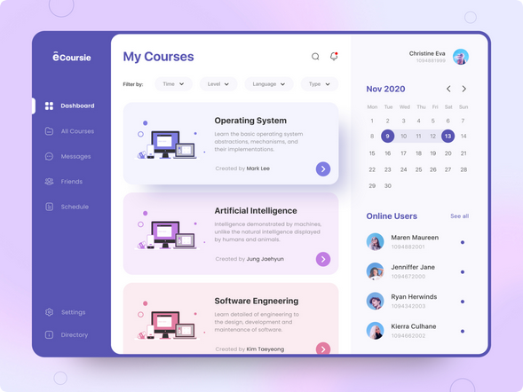

Inspiração para o projeto
No curso de Licenciatura em Informática, na disciplina "Introdução ao Desenvolvimento Web" foi proposto o desenvolvimento de um portifólio para guardar as atividades realizadas durante as aulas. Busquei uma inspiração na plataforma Pinterest e encontrei a imagem acima, onde podemos perceber uma estrutura de dashboard, um menu de navegação localizado na lateral da tela e um container à direita reservado para os conteúdos das telas.
Logo
A logo foi desenvolvida por meio de uma ferramenta online chamada Logo.